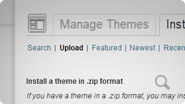
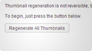
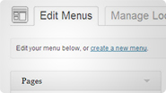
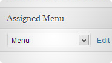
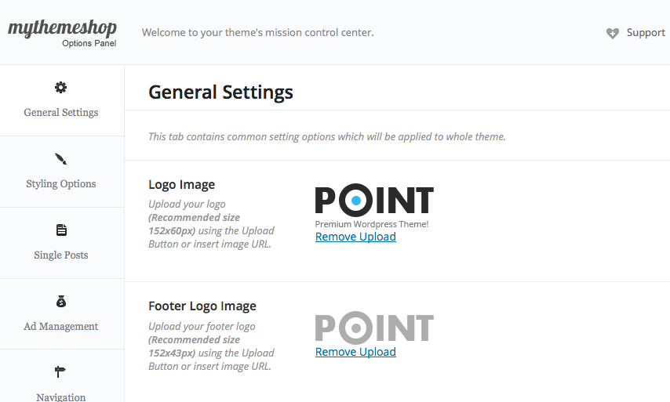
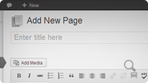
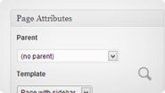

Congratulations!
You have downloaded one of the best WordPress theme available. Let's get started!
The goal of this documentation guide and walkthrough is to get you set up with your new theme as quickly as possible in an easy-to-follow manner, while also introducing you to some of the features and more common tasks when using Point. First, we'll make sure that everything is ready to go for installation, then we'll setup the theme, and then we'll cover some initial configuration and customization options that you're likely to use.
Getting Started
Alright, let's get to work. First, we need to make sure that you have all the necessary things to install Point. You'll need to perform the following steps:
Theme Requirements
First, make sure you have the latest WordPress installation, by checking the update panel within your current WordPress installation. If you don’t have WordPress already, you can download it from the WordPress repository. While Point will work with older versions of WordPress, it is recommended to have the latest version of WordPress.
Next, download the theme ZIP file, and save it somewhere handy on your computer, as you will be using the included files for the rest of the installation process. Unzip the downloaded ZIP file onto your computer, but don’t upload the unzipped folder to your WordPress installation just yet.
Theme Files
Point includes a variety of files, including the necessary theme files, as well as some other useful files. We'll cover what files are included with a description now:
- Documentation — The documentation file you are currently reading is included with Point and is designed to help you get started quickly and easily.
- License Information — A .txt file that contains the information on Point's usage license.
- WordPress Theme Files — Also included are the necessary WordPress theme files, which we will be using for most of the remainder of this document, as a ZIP file that may be extracted as a folder.
Theme Installation
Step 1: Upload and Activation
For installing the Point theme in WordPress, you have two options. You may either upload the theme ZIP file using the WordPress theme installer (Recommended), or you can upload the unzipped theme folder via FTP (Advanced).
Method 1: Install Using the WordPress Theme Installer
{kind=link}
- Log into your WordPress site and open the admin dashboard.
- Navigate to the 'Appearance' tab.
- Choose the 'Themes' tab.
- Click 'Install Themes'
- Select 'point.zip' from within the extracted folder on your computer, and click upload.
- Wait for it to complete, click Activate once the upload has finished and you're ready for the next steps.
Method 2: Upload and Install Using File Transfer Protocol (FTP)
- Extract the 'point.zip' file into a folder within the extracted folder on your computer.
- Either using your FTP client or via your site's FTP panel, upload the extracted folder 'Point' to your /wp-content/themes/ directory.
- Wait for the upload to complete.
- Now, we're ready to activate Point. Back in your WordPress admin panel (yoursite.com/wp-admin/), navigate to Appearance → Themes → Manage Themes. Next, under "Available Themes", click "Activate" for Point.
Step 2: Plugin Installation
Point includes nearly everything you'll need already, but there are some plugins that will make life easier and enable additional functionality that we recommend you install now.
To install a plugin, in your WordPress admin panel (yoursite.com/wp-admin/), navigate to Plugins → Add New. You may search for the name of the plugin you wish to install (names of recommended plugins listed below), which will return a list of potential plugins. Click either "Details" to read more about a plugin if you are unsure, or click "Install Now" if you wish to install the plugin. It may ask if you are sure, and you may proceed, at which point the installation with commence. You must then click "Activate Plugin" to make it available for use.
Recommended Plugins:
- Regenerate Thumbnails — If you have existing content, this will help you update your image thumbnails sizes.
Step 3: Thumbnail size
If you already have had content on your site, you will want to regenerate thumbnails. Using the recommended "Regenerate Thumbnails" plugin above,
you can use the plugin to automatically do it for you.
WordPress Dashboard → Tools → Regen. Thumbnails
Navigation Setup
Configuring Navigation Menus
{kind=link}
WordPress uses easy-to-configure navigation menus that you can set up and control the location of. To get started, navigate to Appearance → Menus in your WordPress admin dashboard.
- Create a name for your menu.
- Using the options on the sidebar for pages, categories, etc, check and click "Add to Menu" for the desired navigation items.
- Drag to reorder and structure your menu in the "Menu Structure" panel.
- Check the box for "Primary Menu" under "Theme locations".
- Click "Save Menu" when done.
Menu Locations
{kind=link}
Point has one menu, the primary menu, which is located at the top of the theme underneath the logo. You must ensure that the checkbox for "Primary Menu" is set for your navigation menu.
Theme Options Panel
The Theme Options Panel
Once you have activated the theme, you will see a welcome message, which will show you how to use the theme options panel. The theme options panel will allow you to configure the settings of your theme.
You will find all the instructions for each setting inside the MyThemeShop options panel. Now, have fun configuring your brand new theme, and explore the various options to make your site truly customized.
To access the Theme Options panel, navigate to Appearance→ Theme Options.

Warning: Clicking the 'Reset to Defaults' button will replace your current settings with the default ones. It is advised that you use the Import / Export feature to create a backup before resetting any options.
Import / Export Options for Backup & Restore
It is highly advised to create backups of your options once you have the theme configured how you want it. It's easy to create a backup.
- First, navigate to Appearance → Theme Options → Import / Export.
- Next, to create a backup, click the "Copy" button under Export Options.
- Copy the text from the text box, save it in a text file on your computer and keep it safe.
- To restore from backup, click the "Import Code" button, paste in the code that was saved, and click the "Import" button. This will overwrite all existing settings, so use caution and create another backup before proceeding.
Transferring Theme Options
You can also use the backup created above to transfer to another site that is using this theme. You can copy the core for your settings, and duplicate it to another site, which is useful if you have a network of blogs that all need the same settings.
Setting Up Pages
Create a New Page
All pages in the demo are built using a combination of shortcodes and a page template. Take the following steps to create new pages for your site.
- Navigate to Pages → Add New.
- In the Page Attributes section, select one of the Templates from the list (see list of available templates below).
- Start adding content in the text editor, or use shortcodes to format your pages, which we'll discuss now.
Available Page Templates:
{kind=link}
- Default Template — The default template is used to create most of the pages, except homepages, and features a sidebar.
- No Sidebar Template — This page template uses the full width without a sidebar.
Sidebars & Widget Areas
MyThemeShop offers powerful custom widgets to help you easily add features and functionality to your WordPress theme without having to tinker with any code. Each widget is listed on the widgets page with a description for your convenience.
Adding Widgets:
First, decide what widget you are looking to add, and where you want it to appear on your site. There are several placements available:
- Home Sidebar: Appears in homepage sidebar.
- Sidebar: Appears in single posts and page sidebar.
- Left Footer: Appears in first column of footer.
- Center Footer: Appears in second column of footer.
- Right Footer: Appears in third column of footer.
To add the custom widget in your theme, navigate to Appearance → Widgets, and drag the desired widget to the right side for the desired widget space. There is a description of each included widget that you can choose from.
Walkthrough example of how to configure the Latest tweets widget: http://mythemeshop.com/support/twitter-widget-is-not-working/Translating Your Theme
MyThemeShop offers translation-ready WordPress themes, so you can easily have your themes translated into additional languages. To translate your theme, perform the following steps:
- First, download the Poedit program: http://www.poedit.net/
- Next, using Poedit, open the default.po file that is present in the “lang” folder of the theme.
- Now, using Poedit, enter a translation for each value that is in the default.po file using the language that you want to translate to.
-
Once you have completed all the translations, you need to save this file using a naming convention. The naming convention that is used for translation files is “languagecode_countrycode”. So, enter the abbreviation for the language you have translated into, and the country specific to that language.
pt_BR.po
pt_BR.moFor a list of the language codes, check the GNU language codes: http://www.gnu.org/software/gettext/manual/html_chapter/gettext_16.html#Language-Codes
For the country codes, check the GNU country codes: http://www.gnu.org/software/gettext/manual/html_chapter/gettext_16.html#Country-Codes
Once you have entered the proper name, click save, and the .po and .mo files will be created for you. Add both files to your theme’s “lang” folder. After this is done, you can close Poedit.
-
To specify which .mo file WordPress should use for translations, open the 'wp-config.php' file from WordPress root directory. Search for the following definition:
define ('WPLANG', '');
Replace it with:
define ('WPLANG', 'filename-without-extension');
example: define ('WPLANG', 'pt_BR');
Save, and your translations should now be taking effect in your theme.